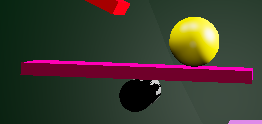
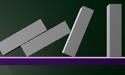
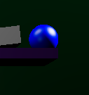
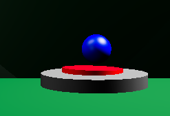

Final Animation
Animation Description
A yellow marble starts off on a series of ramps. It then goes onto a lever, which leads to dominoes. As the dominoes are knocked over, they hit a small blue ball, which falls onto a button.
Storyboards

Machine Objects
Object 1: Yellow Marble

Object 2: Seesaw

Object 3: Dominoes

Object 4: Little Blue Ball

Object 5: Button
Project Explanation
I had some issues with lighting. I couldn't get the shadows to cast correctly.